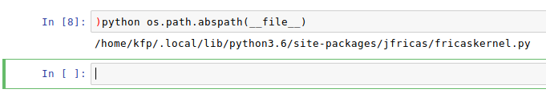

Kernel Configuration¶
For advanced users we here provide a description of the parameters that may be changed without running the risk to spoil the kernel. Nevertheless, you have to do this at your own risk (best effort support only ;)
Finding the Kernel¶
First of all, we have to find the location where the kernel has been installed:
In the running kernel (notebook or console):
)python os.path.abspath(__file__)
or, similarly
)python kernel_file_path
Example:
Edit the Kernel File¶
Open the file path (from above) into your favourite editor and look for
the BEGIN user configuration options.
# ********************************
# BEGIN user configuration options
# ********************************
Foreign commands¶
The following commands are not part of FriCAS, however, we use the same
prefix (namely )) as the system commands (the % as the ipython magics,
might be confusing). So, for instance, the prefix for Python commands could
be changed to %python or whatever.
pycmd = ')python'
shcmd = '!'
shutd = ')shutdown'
gplot = ')gnuplot'
Start options¶
The start options cotrol how the fricas webserver will be started:
fricas_start_options = '-noht' ### -nox blocks if draw is used (others?)
fricas_terminal = [] ### E.g. ['xterm','-e'] for 'xterm'
The FriCAS start options excactly correspond the ones from
$ fricas -h
fricas
[-nosman] use plain command line interface (disables other options)
[-ht |-noht] whether to use HyperDoc
[-gr |-nogr] whether to use Graphics
[-clef |-noclef] whether to use Clef
[-iw |-noiw] start in interpreter window
[-ihere|-noihere] start an interpreter buffer in the original window.
[-nox] don't use X Windows
[-go |-nogo] whether to start system
[-ws wsname] use named workspace
[-list] list workspaces only
[-clefprog fname] use named program for Clef
[-h] show usage
[-eval code] evaluate specified code at start
[-texmacs] setup FriCAS for communication in TeXmacs protocol
[-emacs] setup for emacs frontend
However, let us emphasize that not many of them will actually work as
expected when set in fricas_start_options. The options -nosman
and -nox, for example, might block in case some commands are used which
require the X11 system. We have not tested much of the possible
combinations, but en/dis-abling Clef and Hyperdoc for example, is certainly
no problem.
Shell commands¶
These variables control the external shell commands:
shell_timeout = 15 # Timeout for shell commands in secs.
shell_result = None # store last sh result in python
shell_result_fricas = '__system_result:="{0}"' # store sh result in Fricas
The shell_timeout may be adjusted to suite you needs (in case your shell
jobs might run more than 15 seconds).
The shell_result must not be changed (just initializing).
The shell_result_fricas variable holds the name of the FriCAS variable
which stores the last shell output as string. If you wanted another name
than __system_result, then you would change it here (note that the
part :="{0}" is mandatory).
HTML prefix¶
The HTML prefix defines which strings (Type: String) returned from FricAS will be interpreted as HTML code.
html_prefix = '$HTML$'
You are free to change this, provided that Python can recognize it (technically: str.startswith).
Gnuplot¶
For the built-in Gnuplot feature:
# gnuplot javascript files location
gpjsf = '/static/gpjs'
# gnuplot canvas template (html5)
gptpl =r"""
<script src="{0}/canvastext.js"></script>
<script src="{0}/gnuplot_common.js"></script>
<canvas id="{1}" width=600 height=400></canvas>
<script>{2}</script>
<script>{3}();</script>
"""
The variable gpjsf holds the name of the location from where
the Gnuplot Javascript files are served, i.e. correspondingly
localhost:8888/static/gpjs
Note: there must be a symbolic link from the Gnuplot installation to this directory.
The gptpl is a template for the HTML5 canvas that will be injected to
the Jupyter notebook.
End of user config¶
If you make changes beyond this point, then you will be on your own:
# ***************
# END user config
# ***************
Extending the kernel¶
The jfricas kernel is essentially a simple Python wrapper kernel that
can be extended according to the corresponding Messaging in Jupyter
documentation.